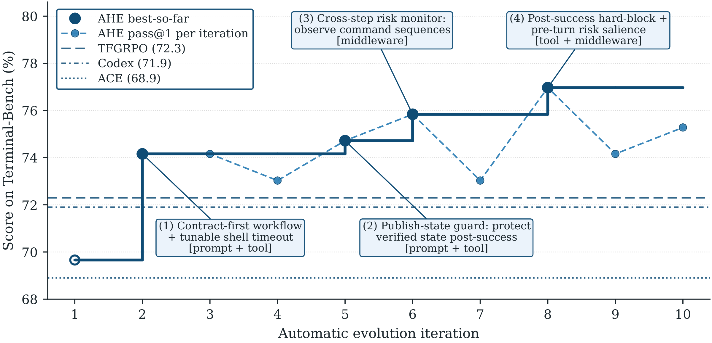

Agent 已经生成了正确文件，最后却执行清理把它删掉。再加一句“提交前仔细检查”能否解决这类问题？AHE 把改进空间开放到工具代码、中间件和记忆等框架组件，让另一个 Agent 阅读执行证据、修改这些组件，再运行任务检验改动。
本文解读 Jiahang Lin、Shichun Liu 等人的 Agentic Harness Engineering: Observability-Driven Automatic Evolution of Coding-Agent Harnesses，依据 arXiv v4，该版本更新于 2026 年 5 月 18 日。文中的成绩均按 v4 实验理解。
一、课题解读：怎样把失败经验变成 Agent 框架的改进
编程智能体处理一个任务时，模型决定下一步做什么，周围的框架负责暴露工具、管理执行状态、组织上下文和保存经验。同一模型可以因为命令超时、输出截断、重复检查或错误清理而交付不同结果。这些模型外的组件共同构成 harness。
人工改进 harness 通常要看轨迹、找失败原因、修改实现、重跑任务。自动化这套过程，需要让改进者知道可以改哪里、在哪段轨迹里找证据，以及怎样判断一次改动有用。还需要注意，某条规则修好了一个任务，也可能占用其他任务的执行预算。
二、相关文献解读：经验可以积累在哪一层
| 工作 | 主要做法 | 与本篇的连接 |
|---|---|---|
| ACE | 把执行经验整理为可演化的上下文知识和 playbook | 研究怎样积累可复用经验，AHE 进一步开放工具实现和执行中间件 |
| Training-Free GRPO | 比较一组轨迹的语义优势，将经验作为调用模型时的 token prior | 提供保持模型参数固定的改进路径，也是本文同种子对照 |
| Terminal-Bench | 用独立终端环境和可执行测试评价长流程任务 | 给框架修改提供实际成功或失败的反馈 |
AHE 的工程基础是 NexAU 与官方实现。作者将可编辑对象、轨迹摘要和改动预测都写为可检查的文件，使下一轮 Agent 能读取并核对上一轮的决定。
三、研究问题解读：自动修改框架需要什么反馈
论文按整体效果、迁移和内部分析组织实验。我们把方法动机归纳为三个问题。
- 编辑空间怎样表达？ 系统提示、工具代码和中间件形式不同，修改者需要找到明确的文件边界，并能撤回改动。
- 从长轨迹中怎样找到可行动的失败模式？ 单看最终分数很难定位问题，直接阅读全部日志又容易耗尽上下文。
- 怎样核对改动的预期与代价？ 既要预测会修复哪些任务，也要检查哪些原本通过的任务会退化，并检验经验能否迁移。
四、方法解读：运行、诊断、修改，再用下一轮证据核对
第一步：把七类组件开放为文件
NexAU 的工作区开放系统提示、工具描述、工具实现、中间件、skill、子智能体配置和长期记忆。种子 NexAU₀ 只提供 shell 工具，尚未装入技能、中间件或长期记忆。每次逻辑改动写入 Git，保留差异和回滚位置。
Code Agent 执行任务，Agent Debugger 分析轨迹，Evolve Agent 修改工作区。首次迭代还安排一次探索，从框架源码和公开参考中整理初始知识。基础模型及评测器配置受到编辑边界保护。改进者可以修改框架，不获得修改任务判分和扩大模型预算的权限。§3.1–3.3
第二步：先读概览，再下钻到失败证据
每个任务生成多条轨迹。同题轨迹被放进同一可导航目录，每条消息可单独访问。Agent Debugger 比较成功和失败，输出任务级原因分析，再汇总为基准级概览。Evolve Agent 可以从概览进入某个任务报告，最后回看清洗轨迹或原始日志。
这种分层保留了核对摘要的路径。例如“最终文件缺失”只是一项结果，轨迹对照才可能显示文件曾经正确、后来又被清理。诊断由模型提出，下一步仍需实际运行验证。
第三步：每次改动写下待检验的预测
修改清单记录失败证据、推测原因、修改位置、预计修复任务和有退化风险的任务。下一轮先运行新框架，再比较任务通过率的变化，将结果反馈到清单；流程允许撤回被拒绝的修改，然后继续生成新改动。
这里的任务变化提供反馈，但多项改动同时进入一轮、每题运行次数有限，仍会限制单项归因。清单让预测可检查，并不能仅凭任务翻转确定某个文件的因果贡献。Algorithm 1 与 §3.3
第四步：把经验落实到会执行的机制
论文的 path-tracing 案例很直观。Agent 已输出正确图像，检查后却用清理命令删掉了交付文件。第 5 轮加入 publish-state 机制：记录成功检查涉及的输出路径，shell 工具在后续删除受保护文件时拦截命令，任务从 0/2 变成 2/2。
之后的案例继续暴露规则边界。允许覆盖拦截的 token 又让 Agent 删除了已部署网页，第 8 轮进一步对关键发布状态实施硬拦截，并在下一次模型调用前注入风险提醒。这些是作者观察到的运行案例，说明经验可以积累成执行机制，也显示一轮修复仍可能留下新的漏洞。附录 C
五、实验设计与结果：整体改善、迁移与代价
主实验：在优化任务上，框架演化提高多少
作者在 Terminal-Bench 2 的全部 89 个任务上进行一次十轮优化，任务包括 4 个 easy、55 个 medium、30 个 hard，全程约 32 小时。任务在隔离环境运行，外部测试给出二元成功结果，单任务时间上限为 3,600 秒。参考配置每题两次 rollout，pass@1 取这些独立尝试的成功均值。比如 2/2 表示两次都成功；这里的平均成功率与“多次中至少成功一次”的口径不同。
下表报告十轮中选出的最好 AHE 配置。各编码 Agent 的主实验使用 GPT-5.4 high。正文称三个角色均为 high，但附录 Table 4 将 Evolve Agent 列为 xhigh，复现实验时需要核对这处设置差异。论文没有给出多次完整优化活动的均值与方差，也未在这 89 题内划分独立留出集。§4.1、Table 1 与附录 A
| 配置 | 总体 pass@1（↑） | Easy | Medium | Hard |
|---|---|---|---|---|
| OpenCode | 47.2% | 75.0% | 52.7% | 33.3% |
| Terminus-2 | 62.9% | 75.0% | 74.5% | 40.0% |
| Codex | 71.9% | 75.0% | 80.0% | 56.7% |
| NexAU₀ 种子 | 69.7% | 87.5% | 78.2% | 51.7% |
| ACE | 68.9% | 91.7% | 78.2% | 48.9% |
| TF-GRPO | 72.3% | 100.0% | 79.4% | 55.6% |
| AHE | 77.0% | 100.0% | 88.2% | 53.3% |
来源：v4 Table 1。总体分母为 89 个任务，各难度列分别按该难度任务计算。

AHE 比种子提高 7.3 个百分点，比 Codex 高 5.1 个百分点。优势主要体现在 Medium，Hard 的 53.3% 低于 Codex 的 56.7%。成绩支持在作者所测优化流程中的改善，独立新任务的表现要看下面的迁移实验。
冻结框架后，换任务或模型还能用吗
作者将演化后的框架冻结，直接在 SWE-bench-verified 上运行，不再用该基准继续演化。
| 配置 | 成功率（↑） | 平均 token / trial（千，↓） |
|---|---|---|
| ACE | 74.6% | 679 |
| TF-GRPO | 74.2% | 582 |
| NexAU₀ | 75.2% | 526 |
| AHE | 75.6% | 461 |
来源：v4 Table 2，总体行标注 500 题。
相对种子，成功率增加 0.4 个百分点，平均 token 减少约 12.4%。token 统计涵盖一次解题内各模型调用的输入与输出，基础设施中断的尝试不纳入 token 均值，但成功率把中断计为失败。因此该数字不能直接理解为整个演化活动的成本节约。Table 2 所列七个仓库的样本量相加为 460，与总体 500 不一致，v4 未解释其余样本，本文保留作者总体行而不重算加权均值。
换模型时，仍在同一 Terminal-Bench 任务集上比较冻结 AHE 与各模型自己的种子框架。DeepSeek-V4-Flash 从 51.7% 到 61.8%，Qwen-3.6-Plus 从 56.2% 到 62.5%，Gemini-3.1-Flash-Lite-Preview 从 36.5% 到 41.6%。这说明框架在三个替代模型家族上仍有收益，不过任务仍是优化时见过的任务，不能同时当作新任务迁移。作者也指出时间和步数预算与推理档位存在耦合。§4.3
组件分析：收益在哪里，为什么不能简单叠加
| 向种子单独换入的演化组件 | 总体 pass@1 | Hard |
|---|---|---|
| 不换入，NexAU₀ | 69.7% | 51.7% |
| 仅长期记忆 | 75.3% | 63.3% |
| 仅工具 | 73.0% | 46.7% |
| 仅中间件 | 71.9% | 50.0% |
| 仅系统提示 | 67.4% | 46.7% |
| 完整 AHE | 77.0% | 53.3% |
来源：v4 Table 3。每行将对应组件换入种子，其余保持种子设置。
长期记忆、工具和中间件分别有正收益，系统提示单独换入则下降。完整 AHE 的总体最好，但 Hard 上低于仅记忆版本。作者从轨迹中解释，多个组件都推动收尾核验，会叠加重复检查，挤占长任务预算。这是对当前组件组合的证据，还需额外对照才能量化三层可观测性各自的独立贡献。
预测分析：知道会修好什么，仍难预见会弄坏什么
跨九个可比较轮次，修复预测的平均 precision 为 33.7%、recall 为 51.4%，高于作者随机基线的 6.5% 和 10.6%。退化预测却只有 11.8% precision 与 11.1% recall，随机基线为 5.6% 和 5.4%。清单有助于提出有针对性的修复，退化风险仍大量漏报。Figure 4
六、我们自己的思考
课题思考：这个领域在研究什么
我们关注的是，Agent 怎样把一次失败转成下一次仍能执行的改进。AHE 将经验落到工具、中间件、记忆等持久对象，并让后续运行反馈决定其去留。对科研 Agent 的启发是，把“结论需要证据”进一步落实到运行步骤和交付检查中。是否适用于科研流程，仍需专门实验验证。
局限问题思考：目前还存在哪些问题
- 优化分数与独立泛化仍有距离。 主成绩在全部优化任务上选最好版本，只有一次完整活动。新基准的成功率增益较小，表格分母和角色推理档位也有待澄清。
- 任务翻转不能充分隔离单项修改效果。 同轮多项编辑、少量重复和组件交互都会影响观察值，尤其是退化预测仍弱。
- 收益依赖运行预算。 重复核验对短任务有益，对长任务可能挤占执行机会。每次解题的 token 节约还没有覆盖离线演化和调试的总成本。
解决方案思考：这些问题有哪些解决方向
- 固定开发与留出划分。 在开发任务上演化，锁定版本后测试新任务，重复完整活动，并公开各配置样本量、采样次数和角色配置。
- 用成对实验检查修改和交互。 对同一任务、相同初始状态重跑单项编辑及关键组件组合，报告修复与退化分布，测量归因结论的稳定性。
- 把预算纳入验收。 联合比较成功率、延迟、token 与演化成本，检查哪些额外核验值得保留，并按任务长度或剩余预算调整触发时机。
依据 论文 PDF v4 和 官方仓库。本文方法图取自仓库原图，训练曲线从与 v4 源文件一致的仓库矢量图渲染。图片遵循仓库 MIT 许可，Copyright © 2026 Jiahang Lin，原作者为 Jiahang Lin 等。论文 arXiv 分发许可与仓库素材许可分别记录于来源清单。